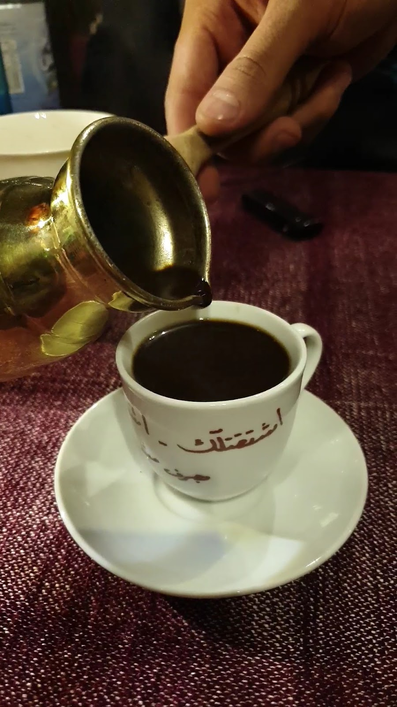
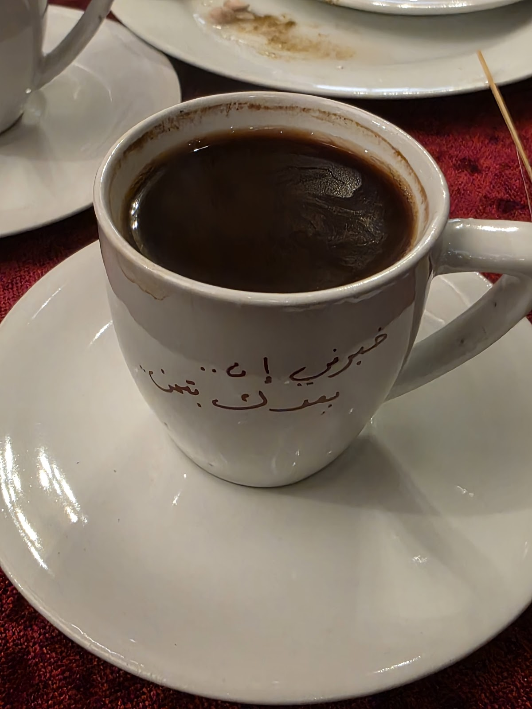
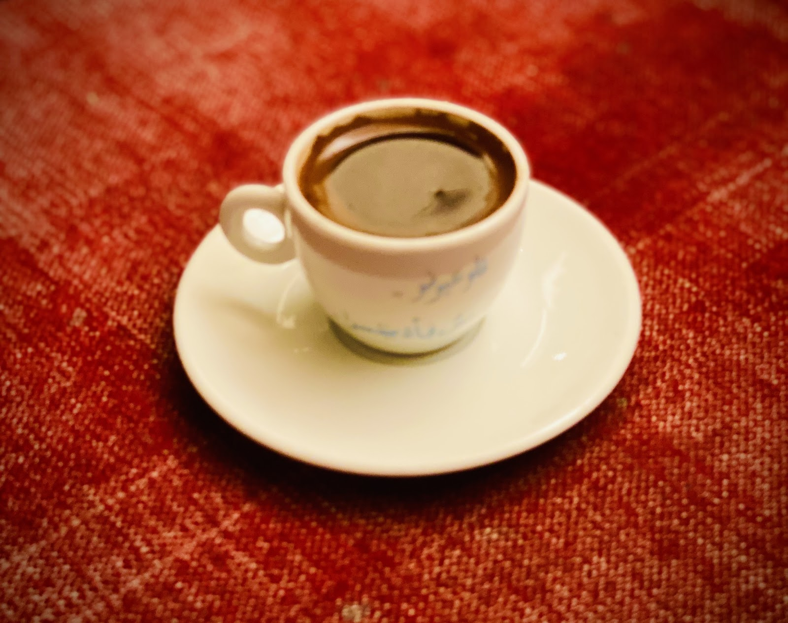
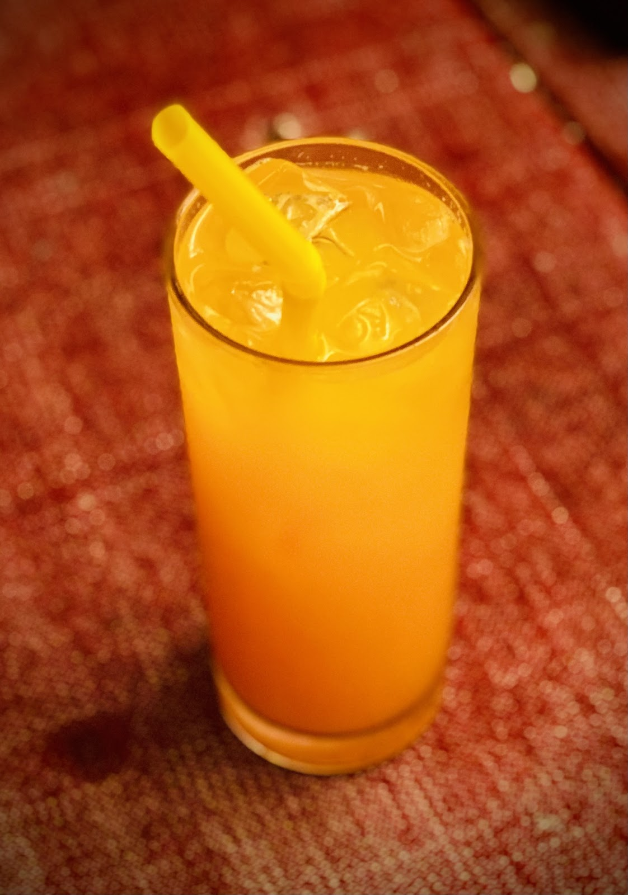
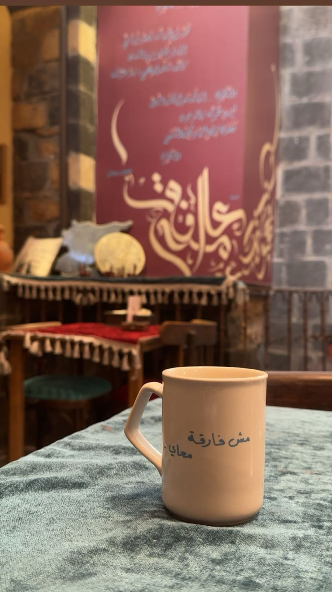
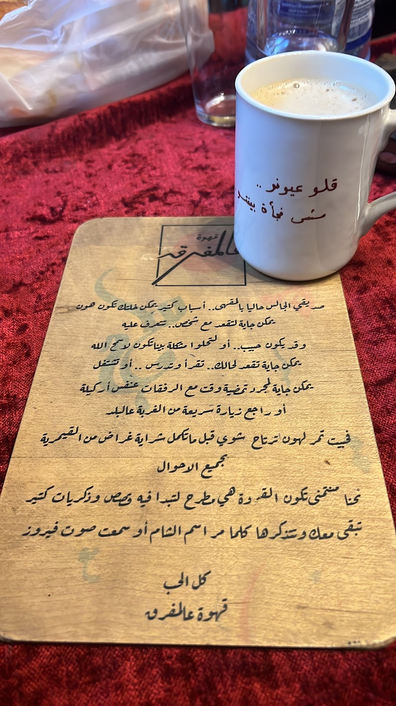

على مفرق زاروبتين بالقيمرية، قهوة صغيرة بشبابيك تركواز — فناجينها مكتوب عليها شعر، وصباحاتها على صوت فيروز.Where two lanes fork in Al-Qaymariyya, a small coffee house with turquoise windows — verses of poetry on its cups, and Fairuz on the morning air.
اسمنا من مكاننا: قاعدين عالمفرق، حيث تفترق جادة زغيب عن زواريب القيمرية. لافتة خشب معلّقة بالهوا، شبابيك تركواز، وكراسي على الحجر — مقهى صغير بيعرف زبائنه بأساميهم، وبيسقيهم قهوة محضّرة على مهل بالدلّة.Our name comes from where we sit: at the mafraq, the fork where Zgheib Lane parts from the alleys of Al-Qaymariyya. A wooden sign hanging in the air, turquoise windows, chairs on the stone — a small coffee house that knows its regulars by name and pours their coffee slowly from the dallah.
وعنّا عادة صارت توقيعنا: على كل فنجان بيت شعر مكتوب بخط اليد — بتشربوا القهوة وبتقرؤوا. الصبح فيروز، والعصر عصير طازج وموكا، والسهرة أحاديث على ضوء الزاروبة. مثل ما كتب زوّارنا: جو ما بينتسى.And we have a habit that became our signature: on every cup, a hand-written line of poetry — you sip, and you read. Fairuz in the morning, fresh juice and mocha in the afternoon, and evening talk under the alley light. As our guests wrote: an atmosphere you don't forget.


توقيعنا — كل فنجان بيطلع من عنّا وعليه بيت شعر، ولا فنجان بيشبه التاني.Our signature — every cup leaves the counter carrying a verse, and no two cups match.

تركية ومرّة محضّرة على مهل — القهوة عنّا طقس، مش طلبية.Turkish and bitter Arabic coffee brewed without hurry — here coffee is a ritual, not an order.

برتقال معصور طازج لمن بيحب يبلّش نهاره بغير القهوة — والقعدة نفسها عالمفرق.Fresh-squeezed orange for those who start the day without coffee — same seat, same fork in the lane.
من زمان والشام بتكتب شعرها عالورق — نحنا منكتبه على الفناجين. بيت لكل فنجان، بخط اليد، بيتبدّل مع المزاج ومع الموسم: شو طلعلكم اليوم؟Damascus has always written its poetry on paper — we write ours on the cups. One hand-written verse per cup, changing with the mood and the season: what will yours say today?
وبالصبح، القهوة إلها رفيقة دايمة: فيروز — عادة البيت اللي بيحكوا عنها زوّارنا بتقييماتهم.And in the morning, the coffee keeps its oldest companion: Fairuz — the house habit our guests mention in their reviews.


"I love the atmosphere with the sound of Fairuz all the time. Friendly staff."
"I recently had the pleasure of dining at قهوة عالمفرق, and I must say it was a delightful experience — a unique and authentic Middle Eastern journey."
"Perfect atmosphere. Good location."
★ 4.5 / 5 — 84 تقييم على غوغلGoogle reviews
| يومياًDaily | 9:00 — 23:30 |
مفتوح كل أيام الأسبوع — من صباحات فيروز حتى آخر السهرة.Open every day — from the Fairuz mornings to the end of the evening.
جادة زغيب — القيمرية، دمشق القديمة
+963 11 544 4516
اتصلوا فيناCall us افتحوا الخريطةOpen in Maps فيسبوكFacebook